釣行日誌 故郷編
2019/07/07 想い出を追いかけて
明日も叔父とは別行動。今夜は20:00にレンタカーを借り出して帰宅し、早々と眠りに就いた。朝というか、丑三つ時の２時頃起きて出撃し、現地には５時前に到着した。
昔、父が元気な頃に連れて行ってくれた山岳渓流に、30年ぶりくらいにやって来た。あの時は９月の雨後だったが、オヤジが型の良いアマゴを連発したのが忘れられなかった。その父も鬼籍に入り、あの日どこを釣ったのか尋ねることもできなくなっていた。しかし、インターネットで地図や航空写真を見ても、父と釣ったのがどのあたりだったのか、見当も付かなかったので、とりあえず本流狙いで適当な空き地に車を停めた。
釣り支度をして、生い茂る草っ原を抜け、大石のゴロゴロしたあたりから入渓する。
梅雨時の増水で、水況は絶好調、良い渓相だが反応が無い。それらしいポイントを目立つ赤金のフローティングミノーで探りつつ、いつものように釣り下る。さっき、少し下の区間まで偵察したので、釣り上がってくる他の人とカチ合う可能性は低いだろう。
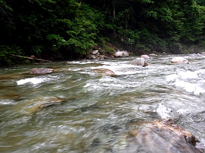
荒瀬の対岸ギリギリにキャストして、ごくゆっくりとリーリングしつつ、時折、控えめにアクションを加える。流れの中央の岩の後ろで突然ショックがあり、なかなか派手なファイトで寄せられてきたのは顔が幼い小ぶりなニジマスだった。
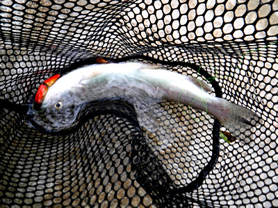
慎重にネットにすくい入れ、ベストの胸ポケットに結わえたデジカメで写真を撮した。グルグル回って抵抗したので、尾っぽのあたりにラインが巻き付いていた。優しくフックを外してリリースしてやった。この１尾が25cmくらいまで無事に成長できれば、なかなかのファイトが期待できそうだったが。
その後、アタリの無いまま堰のバックウォーターまで釣り下る。途中、少し深いところを渡る時に油断して、ヒップウェーダーの太腿を越えて水が入ってしまい、冷たい冷たい。（笑）
バックウォーターは非常に良さそうなポイントだったが沈黙が続く。すると、突如、ミッチェル409 にトラブルが発生した。ベールを起こしても保持されずに戻ってしまうのだ。岸に上がってから、慎重にスプールを外してみると、ベールストッパーを固定している平ネジが緩んで、グラグラになっている。下手に河原でいじくって部品を落としてしまっては大変なので、そのままスプールをはめ、リールをポケットにしまってから車に戻り、予備のダイワと交換した。
仕切り直して、再びさっきの入渓点から河原に降りる。
『良い渓相だがなぁ.....』
と思いながら、今度は釣り上がってゆく。支流との合流点まで行ったが、２尾目のアタリは無い。どこもかしこも良いポイントだらけに見えたのだが。人気河川なので、解禁直後に放流された魚たちはすでにみんな釣られてしまったのか？ それともダレかの腕が悪いだけか？
左から出ている支流へ歩み込み、土手から道路へよじ登る。これだけ水勢が強くては、アマゴでもルアーを追い切れないと考え、一つ覚えでダウンストリームキャストでの釣り下りを行うことにする。川沿いの側道を15分ほど歩いて上り、そこから再度入渓した。
小規模な支流だが、堰堤がたくさんある。かなり水量が多く、魚が居そうなポイントは限られているように思えた。ドクターミノーのフローティング、ヤマメカラーを結んでみる。
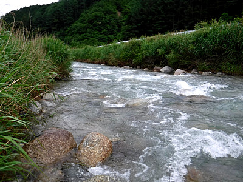
川は小さかったが、水況が良かったのか、可愛いイワナがそこここから、挨拶に出てくれる。20cmほどの魚体は、川底に似せて青白い色をしていた。
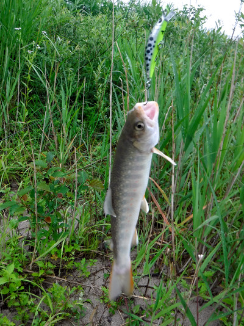
今写真を見返すと、いくら小さくても優しくネットに入れた方が良いのかな？ と反省した。このサイズだと、ネットは使わずにフックを持って外してやっているのだが。いくらシングルフックとはいえ、罪深きは釣り人の業である。
堰堤下の深みで、まずまずのイワナを始めとして、アマゴを含む３連発となった。急流の中で、リーリングを止め、そのまま保持していると水流でミノーが勝手に泳ぎ、泳ぎの鈍いイワナでも喰い付く時間を与えてやる.....という作戦だ。
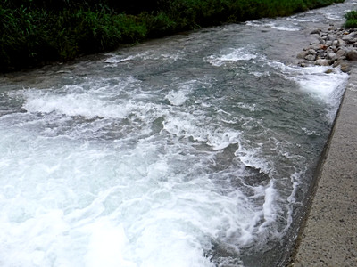
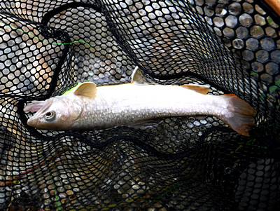
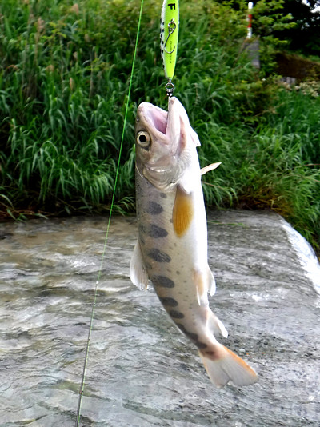
かなり下ってから現れた大淵では、何故か無反応だった。こんなに良いポイントなのに。皆さんに攻め続けられているのかな？
11時頃にこの川を切り上げ、別の谷を目指して車に乗り込む。
２時間ほどのドライブで第２の目的地に着き、昼食もそこそこに、懐かしのポイントへの悪路を歩く。この川は、僕がルアーフィッシングを覚え始めた17歳の頃、数回、兄が連れて来てくれたことがあったのだ。最近は、トシのせいか、無性に昔釣った川を訪れてみたくなり、叔父に抜け駆けしての単独釣行を続けているのだった。
荒れた林道から、動きを止め、気配を消して慎重に観察するが、魚影は無い。水は青緑の深い色を帯びて静まっている。
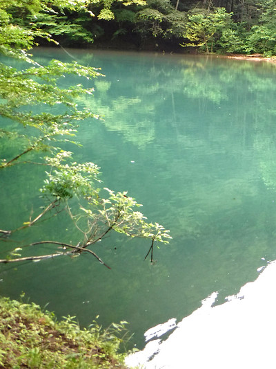
と、散発的なライズが見られた。
『うーむ.....。これはフライの方が分が良いかな.....？』
などと思ったが、今日はルアーの道具しか無い。ライズしているアマゴやイワナをルアーで釣るのは、なかなか難しいのである。（当社比）
山肌が露出した斜面を、足音を立てないように気を付けて降りて、流れ込みからフローティングミノーを遠投して探ってゆく。
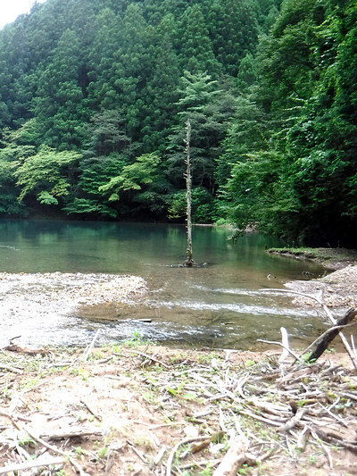
主流の筋では出なかったが、右側の奥で１尾掛かった。しかし、アマゴ特有の魚体の捻転でフックを外されてしまう。ちょっと合わせが弱かったかも知れない。
ルアーをスピナーのミラに替えて、バレたあたりに投げ込むと、すぐヒットして、まず１尾をキャッチできた。この川では、実に37年ぶりのアマゴである。おそらくは水生昆虫を飽食しているのだと思われるが、胃袋が大きく膨らんでいた。
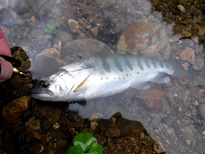
さっきバラした魚か? それとも別の１尾か？ バラした魚だとしたら、黒地に金のスポットのブレードが付いたスピナー：ミラの威力はすごいなと改めて感心した。
本筋のインレットはあらかた探り終えたので、対岸の林の下に出来ていた獣道を静かに歩いて右岸奥の沢の流れ込みへ移動する。砂の上や、小径の上には無数のけものの足跡がある。イノシシかカモシカか？ クマのものでは無いことを祈った。
飛距離の出るミラを遠投して２尾目がヒット！ しかし、あと少しでランディング、という所まで寄せてから、またしてもファイトの最中に外れてしまう。そのアマゴは鈎掛かりしたというのに怯えることなく、いつまでも未練がましく付近をウロウロしていた。
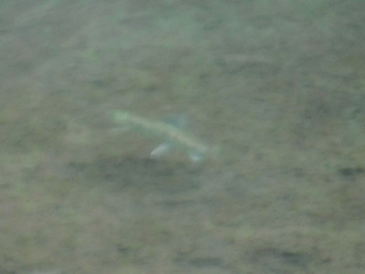
なんとか２尾目を釣ってリリースしていると、遠方でライズがいっぱい起こるようになった。しかし、ルアーにはヒットしない。（泣）
林道側に戻って別の角度から探ると、深場から小さいアマゴが、ワラワラという感じでいっぱい現れた。皆、疑わしい目つきでスピナーの後ろをもの憂げに付いては来るが、喰いつくまでには至らない。
これははるか昔の17歳の頃とまったく同じで、僕の釣りを見ていた兄が、
「お前の必殺のルアーアクションでも喰わなかったか？」
と笑っていたのが思い出された。
今夜、20:00にはレンタカーを返却しないといけないので、早めに切り上げることにして、そこから下の区間を探りつつ車へ戻る。
本当に久しぶりに訪れてみたが、魚が居ることは居るのがわかった。野生のアマゴの美しさも堪能できた。
午後３時頃、疲れて渓から上がり、着替えをして佐々木さん家のみやこおばあちゃんにお土産を買って挨拶をした。
帰りの長い道のりは、襲い来る眠気をコンビニの缶コーヒーとキツイ味のブラックガムで追い払いながら運転した。
釣行日誌 故郷編 目次へ
サイトマップ
ホームへ
お問い合わせ